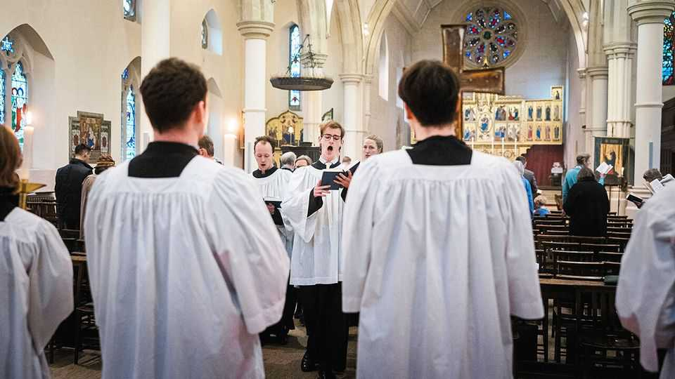

Leaders | The travails of amateur choirs

“Vincerò!” sang Andrea Bocelli on February 6th, as athletes carried the Olympic torch around the San Siro Stadium in Milan. It was a thrilling moment. The word in “Nessun dorma”, from Puccini’s opera “Turandot”, demands a sustained high b—a ringing, show-off note for a professional tenor singer. In the ordinary world, though, tenors are not proclaiming victory.
A great many people sing in choirs. Germany, which created much of the world’s best choral music and now collects excellent statistics, counts 45,000 groups. Not enough of those people are tenors. Music for mixed-sex adult choirs is normally arranged in four voice parts, from highest pitch to lowest: soprano, alto, tenor and bass. Many choirs could do with more basses, but they are painfully short of the voices just above that range. “A bit more from the tenors, please,” implore conductors in schools, halls and churches across the singing world. “And a bit less from the sopranos.”
Why the shortage exists is unclear. Perhaps men’s voices have lowered as they have become taller; perhaps they fear sounding unsexily shrill. Another possibility is that singing the tenor part is hard, both physically and musically. If singing abilities are declining in general, tenors would suffer first. Whatever the causes, the consequences are plain. Some of the classical choral repertoire has already become unsingable for many choirs. Do not attempt Fauré’s “Requiem”, which demands that the tenors divide and sing two separate parts, unless you have a strong section. Other music sounds thin and lacking in the strange, slightly desperate note that tenors supply.
Amateur choirs have tried charging tenors lower membership dues, or even paying them. For a fee, a semi-professional “ringer” or “stiffener” will briefly join the section to boost its sound. This works in a pinch, although it cuts against the collectivist culture of many choirs. In desperation, some groups plump for music that omits the tenor line and treats all men as mid-range baritones. The approach suits some kinds of music, such as gospel, better than others. But the danger is of a downward spiral, as choirs with few tenors pick music that does not require them, and the remaining tenors fade away. Although the voice is unlikely to vanish entirely, it could become unusual—a special sound for special occasions.
Ideally the stock of tenor singers would be larger, not merely allocated more efficiently. It would help in the long run if schools made singing more of a priority, especially among teenagers. Many boys stop singing after their voices break, not only because they struggle with a new instrument but also because they are rudely thrown from singing the tune into singing harmony. In the short run, choirs that can afford it would do well to consult voice coaches. They might discover that some of the men who have assigned themselves to the bass section can sing tenor, as can some of the women who sit with the altos. Tenor voices are like gold, and not only because they are rare and valuable. They need to be dug out of people and worked on.
Everyone should remember that choirs do not demand singers who sound like Mr Bocelli. An ordinary tenor in a chorus is seldom if ever called upon to reach a high b, or to sing with anything approaching his power. Of course, a tenor might briefly imagine that he or she sounds just like an Italian opera star, when hitting a tricky entrance correctly and when—miracle of miracles—the rest of the section gets it right, too. It is not the world’s most harmful fantasy. ■
Subscribers to The Economist can sign up to our Opinion newsletter, which brings together the best of our leaders, columns, guest essays and reader correspondence.